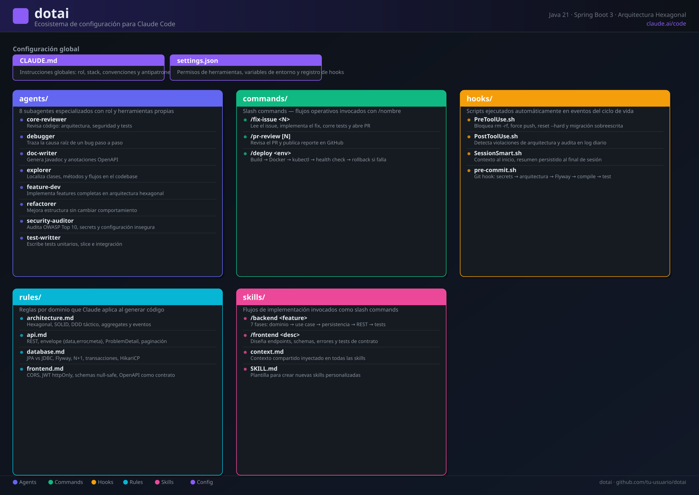
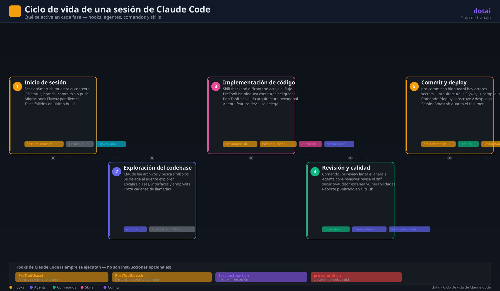

/fix-issue 42Lee el issue de GitHub, localiza el código afectado, escribe el test que falla, implementa el fix
mínimo, corre ./mvnw verify y abre el PR.
dotai centraliza los agentes, comandos, reglas, hooks y skills
que definen cómo Claude trabaja en tu equipo. Clona, enlaza
.claude/ y obtén la misma experiencia en cualquier máquina.
# 1. Clonar el repositorio
git clone https://github.com/tu-usuario/dotai.git
# 2. Enlazar a tu proyecto
ln -s /ruta/a/dotai/.claude /ruta/a/tu-proyecto/.claude
# 3. Abrir Claude Codeclaude
Cinco carpetas, una responsabilidad clara para cada una.
Subagentes especializados que el agente principal delega: revisor, debugger, doc-writer…
Slash commands personalizados (/fix-issue, /pr-review,
/deploy).
Scripts que se ejecutan automáticamente: pre/post-tool, sesión y pre-commit.
Convenciones por dominio: arquitectura, API, base de datos y frontend.
Flujos de trabajo reutilizables para implementar features completas.
Instrucciones globales que Claude lee al inicio de cada conversación.
Cada agente tiene un rol, un modelo y un conjunto acotado de herramientas.
| Agente | Modelo | Herramientas | Para qué sirve |
|---|---|---|---|
core-reviewer |
sonnet | Read, Glob, Grep, Bash | Revisa diffs antes del merge: arquitectura, seguridad, calidad y cobertura. |
debugger |
sonnet | Read, Glob, Grep, Bash | Traza la causa raíz de un bug desde los logs hasta el código fuente. |
doc-writer |
haiku | Read, Glob, Grep, Write, Edit, Bash | Javadoc, anotaciones OpenAPI y documentación técnica. |
explorer |
haiku | Read, Glob, Grep, Bash | Localiza clases, endpoints y traza cadenas de llamadas. |
feature-dev |
sonnet | Read, Glob, Grep, Write, Edit, Bash | Implementa features completas siguiendo arquitectura hexagonal. |
refactorer |
sonnet | Read, Glob, Grep, Write, Edit, Bash | Refactoriza sin cambiar comportamiento: SOLID, record, extract method. |
security-auditor |
sonnet | Read, Glob, Grep, Bash | Audita OWASP Top 10, secrets, IDOR, CORS, Actuator sin protección. |
test-writter |
sonnet | Read, Glob, Grep, Write, Edit, Bash | Tests unitarios, slices @WebMvcTest e integración con Testcontainers. |
Los comandos encapsulan procesos repetitivos. Se invocan con /nombre [argumento].
/fix-issue 42Lee el issue de GitHub, localiza el código afectado, escribe el test que falla, implementa el fix
mínimo, corre ./mvnw verify y abre el PR.
/pr-review [N]Revisa el PR (activo o por número) contra las reglas de arquitectura, API, BD y seguridad; publica el reporte como comentario en GitHub.
/deploy stagingValida el branch, corre tests, construye la imagen Docker, despliega con kubectl,
verifica el health check y hace rollback automático si algo falla.
A diferencia de las instrucciones, los hooks no son opcionales para Claude.
| Script | Tipo | Evento | Qué hace |
|---|---|---|---|
PreToolUse.sh |
Claude Code | Antes de cada herramienta | Bloquea rm -rf críticos, force push a main, git reset --hard, DROP
TABLE y sobreescritura de migraciones Flyway.
|
PostToolUse.sh |
Claude Code | Después de cada herramienta | Detecta imports de Spring/JPA en domain/ y entidades JPA en la capa web.
Registra log de auditoría.
|
SessionSmart.sh |
Claude Code | Inicio y fin de sesión | Al iniciar muestra branch, archivos sucios, commits sin push y tests fallidos. Al finalizar guarda un resumen. |
pre-commit.sh |
Git hook | git commit |
5 checks: secrets, arquitectura hexagonal, convención Flyway, ./mvnw compile y
./mvnw test.
|
Más granulares que CLAUDE.md: cada archivo dicta los patrones de un área concreta.
Arquitectura hexagonal con diagramas, reglas de dependencia entre capas, patrones DDD tácticos y la tabla SOLID con señales de violación.
Diseño de URLs y métodos HTTP, códigos de estado, envelope {data, error, meta},
ProblemDetail RFC 9457, paginación e idempotency keys.
Árbol de decisión JPA vs JDBC, soluciones al N+1, formato Flyway, transacciones, HikariCP y features de PostgreSQL.
CORS por perfil, JWT con refresh token en cookie httpOnly, errores con errors[{field,
message}], SSE vs WebSocket y OpenAPI como contrato.
A diferencia de los comandos, las skills aseguran que el código siga las convenciones del proyecto.
/backend <descripcion>Implementa una feature completa en 7 fases: explorar → modelar dominio → caso de uso →
persistencia con Flyway → adapter web → tests → ./mvnw verify.
/frontend <descripcion>Diseña el contrato de API: pantallas → endpoints → schemas → errores → filtros y paginación → documentación OpenAPI → tests de contrato.
Tres vistas para entender el repositorio de un solo vistazo. Haz clic en cualquier imagen para verla a tamaño completo.
Mapa completo de los componentes de .claude/: agentes, comandos, hooks, reglas y skills.

Ciclo de vida de una sesión de Claude Code: del inicio al cierre, con los hooks que se activan en cada paso.

git clone https://github.com/tu-usuario/dotai.git# Opción A — symlink (los cambios en dotai se reflejan automáticamente)
ln -s /ruta/a/dotai/.claude /ruta/a/tu-proyecto/.claude
# Opción B — copiar (configuración independiente por proyecto)
cp -r /ruta/a/dotai/.claude /ruta/a/tu-proyecto/.claudeln -s /ruta/a/dotai/.claude/hooks/pre-commit.sh .git/hooks/pre-commit
chmod +x .git/hooks/pre-commitclaudeLa configuración de .claude/ se carga automáticamente.